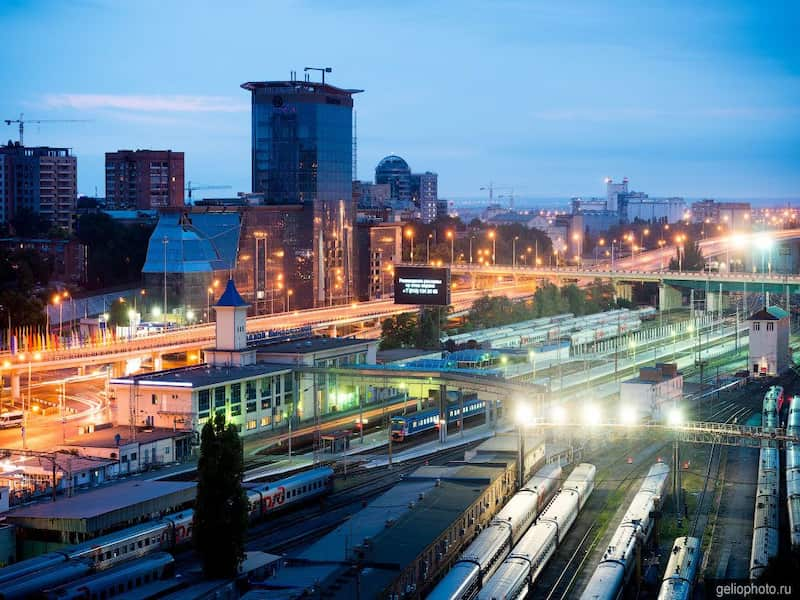
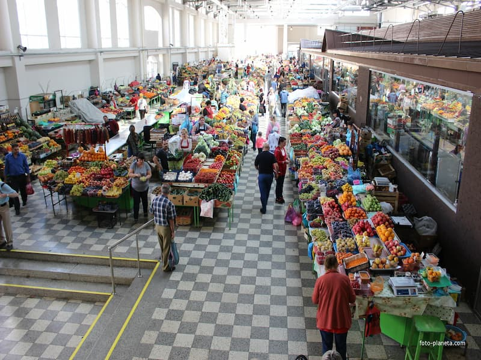
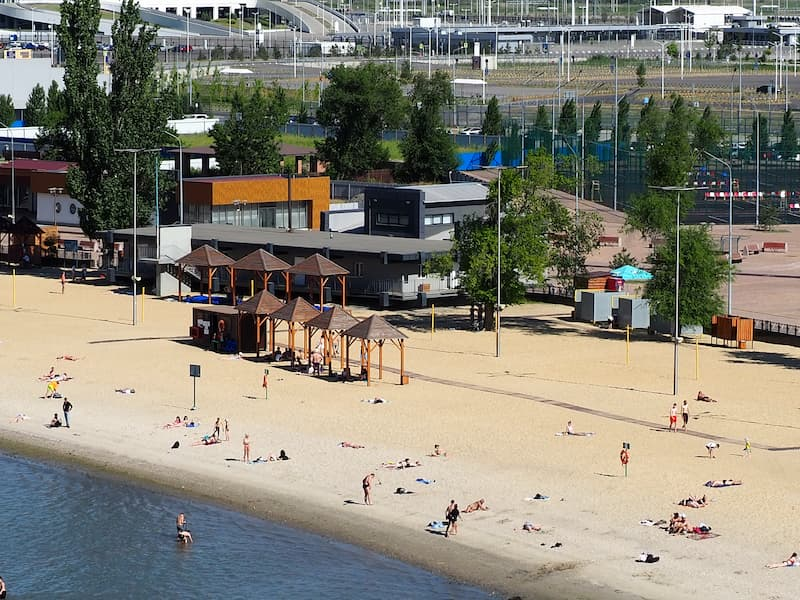

Карта маршрута
Расписание маршрута
09:00 — 17:30
1

09:00 — 09:20
Железнодорожный вокзал
Величественный вокзальный комплекс — образец советского ампира. Отправная точка маршрута.
Совет: сфотографируйте главный фасад — лучшее освещение с утра
2

09:30 — 10:30
Театральная площадь
Центральная площадь города с фонтаном и памятником. Здесь расположен Театр драмы им. Горького.
Совет: в сезон здесь проходят городские фестивали и ярмарки
3
10:45 — 11:30
Покровский собор
Один из старейших православных храмов Ростова. Уникальная архитектура XVIII века.
Совет: вход свободный, дресс-код обязателен для посещения
4

11:45 — 13:00
Центральный рынок
Колоритный городской рынок с донскими деликатесами, рыбой и свежими овощами.
Совет: попробуйте донскую рыбу прямо здесь — сазан и судак
5

13:30 — 14:30
Парк им. Горького ⭐
Главный парк города с аттракционами, кафе и живописными аллеями. Идеальное место для обеда.
Совет: ключевая точка маршрута — отдохните и пообедайте перед набережной
6

15:00 — 16:30
Набережная Дона
Живописная прогулочная зона вдоль реки с видами на противоположный берег и причалами.
Совет: возьмите прогулку на теплоходе — 45 минут по Дону за 400₽
7

16:45 — 17:30
Левый берег Дона
Пляжная зона с ресторанами, барами и видом на закат над рекой. Завершение маршрута.
Совет: закат здесь особенно красив — лучшая точка для финального фото